CHEBFUN GUIDE 9: INFINITE INTERVALS, INFINITE FUNCTION VALUES, AND SINGULARITIES
Lloyd N. Trefethen, November 2009, revised February 2011
Contents
This chapter presents some features of Chebfun that are less robust than what is described in the first eight chapters. With classic bounded chebfuns on a bounded interval [a,b], you can do amazingly complicated things often without encountering any difficulties. Now we are going to let the intervals and the functions diverge to infinity -- but please lower your expectations! Partly because the software is relatively new, and partly for good mathematical reasons, one cannot expect the same reliability with these features.
9.1 Infinite intervals
If a function converges reasonably rapidly to a constant at infinity, you can define a corresponding chebfun. Here are a couple of examples on [0,inf]. First we plot a function and find its maximum:
f = chebfun('0.75 + sin(10*x)./exp(x)',[0 inf]);
plot(f)
maxf = max(f)
maxf = 1.608912750768338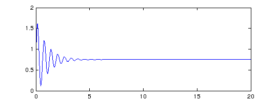
Next we plot another function and integrate it from 0 to inf:
g = chebfun('1./(gamma(x+1))',[0 inf]); sumg = sum(g) plot(g,'r')
sumg = 2.266534507699849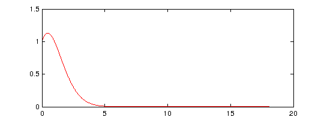
Where do f and g intersect? We can find out using roots:
plot(f), hold on, plot(g,'r') r = roots(f-g) plot(r,f(r),'.k')
r = 0.027639744894514 0.265714132607452 0.706922132176980 0.862331877000826 1.297442594652154 1.594466987072372 1.781855556974647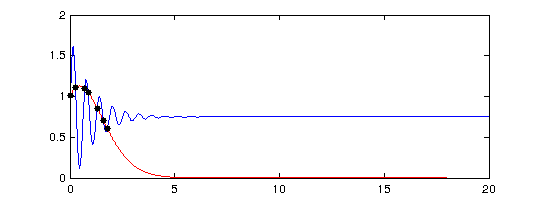
Here's an example on [-inf,inf] with a calculation of the location and value of the minimum:
g = chebfun(@(x) tanh(x-1),[-inf inf]); g = abs(g-1/3); clf, plot(g) [minval,minpos] = min(g)
minval = -1.333333333333336 minpos = -Inf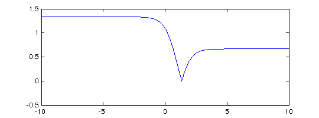
Notice that a function on an infinite domain is by default plotted on an interval like [0,10] or [-10,10]. You can use an extra 'interval' flag to plot on other intervals, as shown by this example of a function of small norm whose largest values are near x=30:
hh = @(x) cos(x)./(1e5+(x-30).^6);
h = chebfun(hh,[0 inf]);
plot(h,'interval',[0 100])
normh = norm(h)
normh =
2.441961683579456e-05
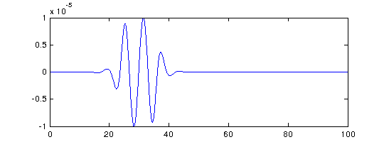 Chebfun provides a convenient tool for the numerical evaluation of integrals over infinite domains:
g = chebfun('(2/sqrt(pi))*exp(-x.^2)',[0 inf])
sumg = sum(g)
g =
chebfun column (1 smooth piece)
interval length endpoint values
[ 0, Inf] 101 1.1 0
vertical scale = 1.5
sumg =
0.999999999999999
The cumsum operator applied to this integrand gives us the error function, which matches Matlab's erf function well:
errorfun = cumsum(g) disp(' erf errorfun') for n = 1:6, disp([erf(n) errorfun(n)]), end
errorfun =
chebfun column (1 smooth piece)
interval length endpoint values
[ 0, Inf] 93 5.6e-17 1
vertical scale = 8.5
erf errorfun
0.842700792949715 0.842700792949714
0.995322265018953 0.995322265018952
0.999977909503001 0.999977909503001
0.999999984582742 0.999999984582741
0.999999999998463 0.999999999998462
1.000000000000000 1.000000000000000
One should be cautious in evaluating integrals over infinite intervals, however, for as mentioned in Section 1.5, the accuracy is sometimes disappointing, especially for functions that do not decay very quickly:
sum(chebfun('(1/pi)./(1+s.^2)',[-inf inf]))
ans = 0.999999999998853
Here's an example of a function that is too wiggly to be fully resolved:
sinc = chebfun('sin(pi*x)./(pi*x)',[-inf inf]); plot(sinc,'m','interval',[-10 10])
Warning: Function not resolved, using 65537 pts. Have you tried 'splitting on'?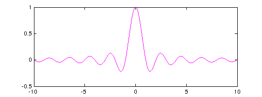
Chebfun's capability of handling infinite intervals was introduced by Rodrigo Platte in 2008-09. The basis of these computations is a change of variables, or mapping, which simplifies the infinite interval to [-1,1]. Let's take a look at what is going on in the case of the function g just constructed. We'll do this by digging inside Chebfun a bit -- with a warning that the details of these inner workings are not fixed, but may change in future releases.
First we look at the different fields that make up a chebfun:
struct(g)
Warning: Calling STRUCT on an object prevents the object from hiding its
implementation details and should thus be avoided. Use DISP or DISPLAY to see
the visible public details of an object. See 'help struct' for more information.
ans =
funs: [1x1 fun]
nfuns: 1
ends: [0 Inf]
scl: 1.523811527401032
imps: [1.128379167095513 0]
trans: 0
jacobian: [1x1 anon]
ID: [8931 73495852651]
funreturn: 0
The first field, funs, indicates in this case that g consists of a single fun, that is, it is not split into pieces. We can look at that fun like this:
f = g.funs; struct(f)
Warning: Calling STRUCT on an object prevents the object from hiding its
implementation details and should thus be avoided. Use DISP or DISPLAY to see
the visible public details of an object. See 'help struct' for more information.
ans =
n: 101
vals: [101x1 double]
coeffs: [101x1 double]
exps: [0 0]
scl: [1x1 struct]
map: [1x1 struct]
ish: 1
The crucial item here is map, which in turn has a number of fields:
m = f.map
m =
for: @(y)15*s*(y+1)./(1-y)+a
inv: @(x)(-15*s+x-a)./(15*s+x-a)
der: @(y)15*s*2./(y-1).^2
name: 'unbounded'
par: [0 Inf 1]
inherited: 0
What's going on here is the use of a rational mapping from the y variable in [-1,1] to the x variable in [0,inf]. The forward map is a Matlab anonymous function,
m.for
ans =
@(y)15*s*(y+1)./(1-y)+a
The inverse map is another anonymous function,
m.inv
ans =
@(x)(-15*s+x-a)./(15*s+x-a)
The derivative of the forward map is used in the calculation of integrals and derivatives:
m.der
ans =
@(y)15*s*2./(y-1).^2
Matlab's anonymous functions don't make the values of the parameters a and s visible, though as it happens these numbers can be found as the first and last entries of the par field,
m.par
ans =
0 Inf 1
The use of mappings to simplify an unbounded domain to a bounded one is an idea that has been employed many times over the years. One of the references we have benefitted especially from, which also contains pointers to other works in this area, is the book [Boyd 2001].
9.2 Poles
Chebfun can handle certain "vertical" as well as "horizontal" infinities -- especially, functions that blow up according to an integer power, i.e., with a pole. If you know the nature of the blowup, it is a good idea to specify it using the 'exps' flag. For example, here's a function with a pole at 0. We can use 'exps' to tell the constructor that the function looks like x^(-1) at the left endpoint and x^0 (i.e., smooth) at the right endpoint.
f = chebfun('sin(50*x) + 1./x',[0 4],'exps',[-1,0]); plot(f), ylim([-5 30])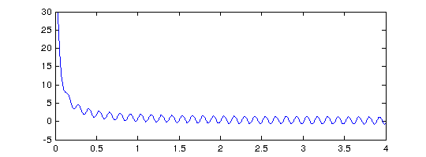
Here's the same function but over a domain that contains the singularity in the middle. We tell the constructor where the pole is and what the singularity is like:
f = chebfun('sin(50*x) + 1./x',[-2 0 4],'exps',[0,-1,0]); plot(f), ylim([-30 30])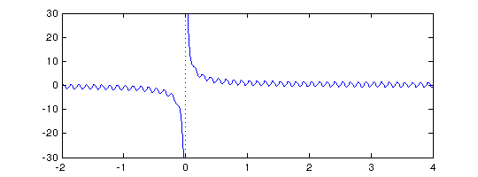
Here's the tangent function:
f = chebfun('tan(x)', pi*((-5/2):(5/2)), 'exps', -ones(1,6)); plot(f), ylim([-5 5])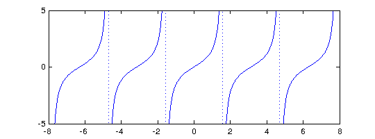
Rootfinding works as expected:
x2 = chebfun('x/2',pi*(5/2)*[-1 1]); hold on, plot(x2,'k') r = roots(f-x2); plot(r,x2(r),'or','markersize',8)

And we can manipulate the function in various other familiar ways:
g = sin(2*x2)+min(abs(f+2),6);
hold off, plot(g)

If you don't know what singularities your function may have, Chebfun has some ability to find them if the flags "blowup" and "splitting" are on:
gam = chebfun('gamma(x)',[-4 4],'splitting','on','blowup',1); plot(gam), ylim([-10 10])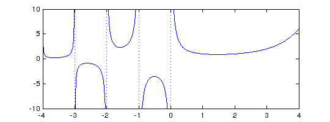
But it's always better to specify the breakpoints and powers if you know them:
gam = chebfun('gamma(x)',[-4:0 4],'exps',[-1 -1 -1 -1 -1 0]);
If you know the breakpoints but not the strengths of the poles, you can specify NaN at locations of unknown strength:
f = chebfun(@(t) exp(t)./(exp(t)-1),[0 1],'exps',[NaN 0])
f =
chebfun column (1 smooth piece)
interval length endpoint values exponents
[ 0, 1] 12 Inf 1.6 -1 0
vertical scale = 3.2
It's also possible to have poles of different strengths on two sides of a singularity. In this case, you specify two exponents at each internal breakpoint rather than one:
f = chebfun(@(x) cos(100*x)+sin(x).^(-2+sign(x)),[-1 0 1],'exps',[0 -3 -1 0]);
plot(f), ylim([-30 30])
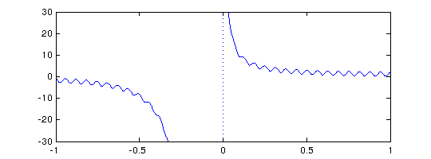 9.3 Singularities other than poles
Less reliable but also sometimes useful is the possibility of working with functions with algebraic singularities that are not poles. Here's a function with inverse square root singularities at each end:
w = chebfun('(2/pi)./(sqrt(1-x.^2))','exps',[-.5 -.5]); plot(w,'m'), ylim([0 10])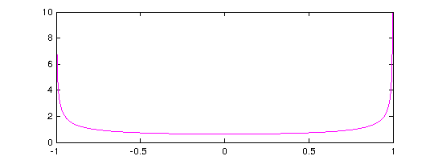
The integral is 2:
sum(w)
ans = 2.000000000000000
We pick this example because Chebyshev polynomials are the orthogonal polynomials with respect to this weight function, and Chebyshev coefficients are defined by inner products against Chebyshev polynomials with respect to this weight. For example, here we compute inner products of x^4 + x^5 against the Chebyshev polynomials T0,...,T5. (The integrals in these inner products are calculated by Gauss-Jacobi quadrature using methods implemented by Nick Hale; for more on this subject see the command jacpts.)
x = chebfun('x');
T = chebpoly(0:5)';
f = x.^4 + x.^5;
chebcoeffs1 = T*(w.*f)
chebcoeffs1 = 0.750000000000000 0.625000000000000 0.500000000000000 0.312500000000000 0.125000000000001 0.062500000000000
Here for comparison are the Chebyshev coefficients as obtained from chebpoly:
chebcoeffs2 = flipud(chebpoly(f)')
chebcoeffs2 = 0.375000000000000 0.625000000000000 0.500000000000000 0.312500000000000 0.125000000000000 0.062500000000000
Notice the excellent agreement except for coefficient a0. As mentioned in Section 4.1, in this special case the result from the inner product must be multiplied by 1/2.
You can specify singularities for functions that don't blow up, too. For example, suppose we want to work with sqrt(x*exp(x)) on the interval [0,2]. A first try fails completely:
ff = @(x) sqrt(x.*exp(x)); d = domain(0,2); f = chebfun(ff,d)
Warning: Function not resolved, using 65537 pts. Have you tried 'splitting on'?
f =
chebfun column (1 smooth piece)
interval length endpoint values
[ 0, 2] 65537 0 3.8
vertical scale = 3.8
We could turn splitting on and resolve the function by many pieces, as illustrated in Section 8.3:
f = chebfun(ff,d,'splitting','on')
f =
chebfun column (7 smooth pieces)
interval length endpoint values
[ 0, 2e-10] 52 8.7e-08 1.4e-05
[ 2e-10, 2e-08] 59 1.4e-05 0.00014
[ 2e-08, 2e-06] 104 0.00014 0.0014
[ 2e-06, 0.0002] 115 0.0014 0.014
[ 0.0002, 0.02] 126 0.014 0.14
[ 0.02, 1] 98 0.14 1.7
[ 1, 2] 18 1.7 3.8
Total length = 572 vertical scale = 3.8
A much better representation, however, is constructed if we tell Chebfun about the singularity at x=0:
f = chebfun(ff,d,'exps',[.5 0])
plot(f)
f =
chebfun column (1 smooth piece)
interval length endpoint values exponents
[ 0, 2] 13 0 3.8 0.5 0
vertical scale = 3.8
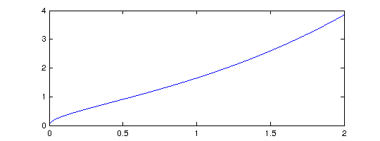 Under certain circumstances Chebfun will introduce singularities like this of its own accord. For example, just as abs(f) introduces breakpoints at roots of f, sqrt(abs(f)) introduces breakpoints and also singularities at such roots:
theta = chebfun('t',[0,4*pi]);
f = sqrt(abs(sin(theta)))
plot(f)
sumf = sum(f)
f =
chebfun column (4 smooth pieces)
interval length endpoint values exponents
[ 0, 3.1] 19 0 0 0.5 0.5
[ 3.1, 6.3] 19 0 0 0.5 0.5
[ 6.3, 9.4] 19 0 0 0.5 0.5
[ 9.4, 13] 19 0 0 0.5 0.5
Total length = 76 vertical scale = 0.99
sumf =
9.585121877884733
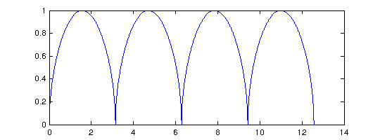 If you have a function that blows up but you don't know the nature of the singularities, even whether they are poles or not, Chebfun will try to figure them out automatically if you run in 'blowup 2' mode. Here's an example
f = chebfun('x.*(1+x).^(-exp(1)).*(1-x).^(-pi)','blowup',2)
f =
chebfun column (1 smooth piece)
interval length endpoint values exponents
[ -1, 1] 62 -Inf Inf -2.7 -3.1
vertical scale = 1
Notice that the 'exps' field shows values close to -e and -pi, as is confirmed by looking at the numbers to higher precision:
f.funs.exps
ans = -2.718281828460000 -3.141592653590000
The treatment of blowups in Chebfun was initiated by Mark Richardson in an MSc thesis at Oxford [Richardson 2009], then further developed by Richardson in collaboration with Rodrigo Platte and Nick Hale.
9.4 Another approach to singularities
We have just seen how certain algebraic singularities can be captured in Chebfun via the 'exps' flag, which represents the function in question by a polynomial times certain algebraic terms. One example looked like this:
ff = @(x) sqrt(x.*exp(x));
d = domain(0,2);
f = chebfun(ff,d,'exps',[.5 0])
f =
chebfun column (1 smooth piece)
interval length endpoint values exponents
[ 0, 2] 13 0 3.8 0.5 0
vertical scale = 3.8
It is easy to run into trouble with such calculations, however, for example if we define
gg = @(x) 1+sqrt(x.*exp(x));
and then try g = chebfun(gg,d,'exps',[.5 0]). Better results may sometimes be achieved -- for bounded functions only -- by using a different experimental Chebfun facility based on the same kind of changes of variable that make infinite intervals possible as described in Section 9.1. For example, we may write
g = chebfun(gg,d,'singmap',[.5 0])
g =
chebfun column (1 smooth piece)
interval length endpoint values mapping
[ 0, 2] 19 1 4.8 sing 0.5 1
vertical scale = 4.8
Here's another example:
ff = @(x) cos(22*x)./(1+x.^2) + gamma(1.2+x).*real(airy(10*x)).*(1-x).^.3;
f1 = chebfun(ff,'singmap',[0 .3])
plot(min(f1,1))
f1 =
chebfun column (1 smooth piece)
interval length endpoint values mapping
[ -1, 1] 103 -0.27 -0.5 sing 1 0.3
vertical scale = 1.3
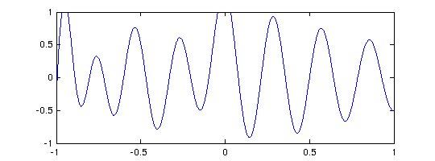 9.5 References
[Boyd 2001] J. P. Boyd, Chebyshev and Fourier Spectral Methods, 2nd ed., Dover, 2001.
[Richardson 2009] M. Richardson, Approximating Divergent Functions in the Chebfun System, thesis, MSc in Mathematical Modelling and Scientific Computing, Oxford University, 2009.